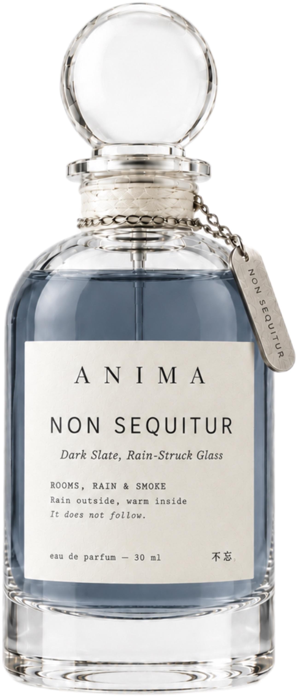
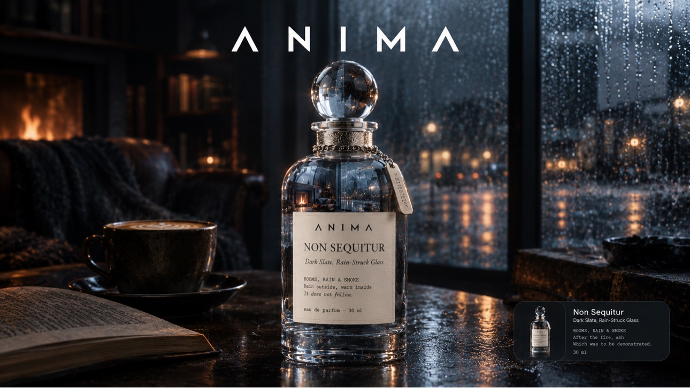

Some people feel safest when the weather is at its worst, and if you're one of them, you already understand this scent without me explaining it. The rain begins at night, a steady drumming on the roof and against the glass that makes the world outside sound like it is being washed clean, and that sound is the whole reason my mind gets excited instead of gloomy, because rain heard from somewhere dry is safety made audible. I am in bed, the duvet pulled to my chin, a cup of coffee on the nightstand and a book in my hands, or curled up in my favorite chair in front of the fireplace, and I have never felt more safe. I still remember gathering in shelters while it rained, getting warmth from each other without minding personal space, and that feeling never left me. The window pane makes it stronger, because watching heavy rain from a warm, dry room shows you exactly where the harsh world ends and your protected space begins. There is no pressure to be productive, no obligation to be social — the weather is bad, and so the world has given me permission to do nothing but read, to be warm, to be protected. The worse the storm, the deeper the peace. The rain is a boundary, and on this side of it, I am perfectly, completely safe. By all logic the rain should make me sad. It makes me calm instead. It doesn't follow. The rain on the pane, the world can wait — I am not going anywhere.
雨是躺下以后才开始下的。先打在窗台上，嗒，嗒，不紧不慢，像有人在外面用手指敲玻璃，试试里面有没有人。然后密起来，连成一片，哗——整面窗都湿了，路灯的光透进来，被水扯成一道道歪歪扭扭的黄。
我在被子里，肩膀露在外面有点凉，缩回去，脚碰到热水袋，还温着。雨声很大，但隔着一层玻璃，听起来闷闷的，不凶，反而让人想把被子拉高一点，把下巴埋进去。
外面越响，里面越静。没有电话，没有消息，没有“你在吗”。雨把世界关在外面了，我有了一整个晚上的许可：什么都不做。翻一页书，听一阵雨，困了就关灯。雨还在下。我哪儿也不去。
